A robot championship at 15 sparked an obsession with engineering. Mechatronics degree, battle robots, 4.5 years of industrial QA, a working holiday across Australia, and finally New Zealand, where I completed my MSE and decided to plant roots.
4.5 years
Survived (and thrived in) the high-stakes world of industrial QA at Arçelik Hitachi. If it shipped, it was quality-approved by me.
B.Eng + MSE
Mechatronics engineer turned software craftsman. Graduated 2025!
World Robot Olympiad
2010 Champion in Manila. Peaked at 15 and still proud.
4 Countries
Chaiyaphum → USA → Australia → Auckland. Home is wherever the Wi-Fi connects.
Code Everything
JS, Python, C++, React, .NET. Frontend pixels to backend APIs.
It started with a robot. At 14, I represented Thailand at the World Robot Olympiad in Manila and won. That single moment sent me chasing a Mechatronics degree at KMUTT, where I designed battle robots, competed in ABU Robocon, and 3D-modelled drones in Autodesk Inventor. Honest truth: I was never the strongest programmer in the room. But I was the one who could take software, hardware, and electronics and make them work together.
That integration mindset landed me at Arçelik Hitachi for 4.5 years as a QA Engineer. My world was automatic inspection machines: door colour detectors, door-gap alignment checkers, PLC-controlled quality gates. I understood production lines inside-out, investigated defects, and frequently flew overseas for rework ops (I now genuinely hate flying). Eventually I felt saturated and needed a bigger world.
So I packed my bags for Australia, managed facilities at Heartbreak Hotel McArthur, operated automatic M/C at Langdon Ingredients. Then New Zealand called. I earned my MSE at Yoobee in 2025, combined my engineering roots with full-stack dev skills, and decided: this is where I'm staying. I write code I can explain to anyone, no jargon needed.
"Scared? Always. Doing it anyway? Every single time. That's the whole secret."
"Everything is already good, and can always be even better. Perfection is a direction, not a destination."
"Simple execution, stunning results."
The one rule I live by
Yoobee College, Auckland, NZ
Leveled up from hardware to software. Mastered full-stack development, software architecture, and design patterns. Built real-world apps (MediTrack, car rental systems) and proved that a mechatronics engineer can code just as hard as any CS grad. Diploma: acquired.
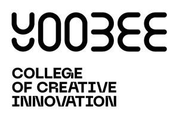
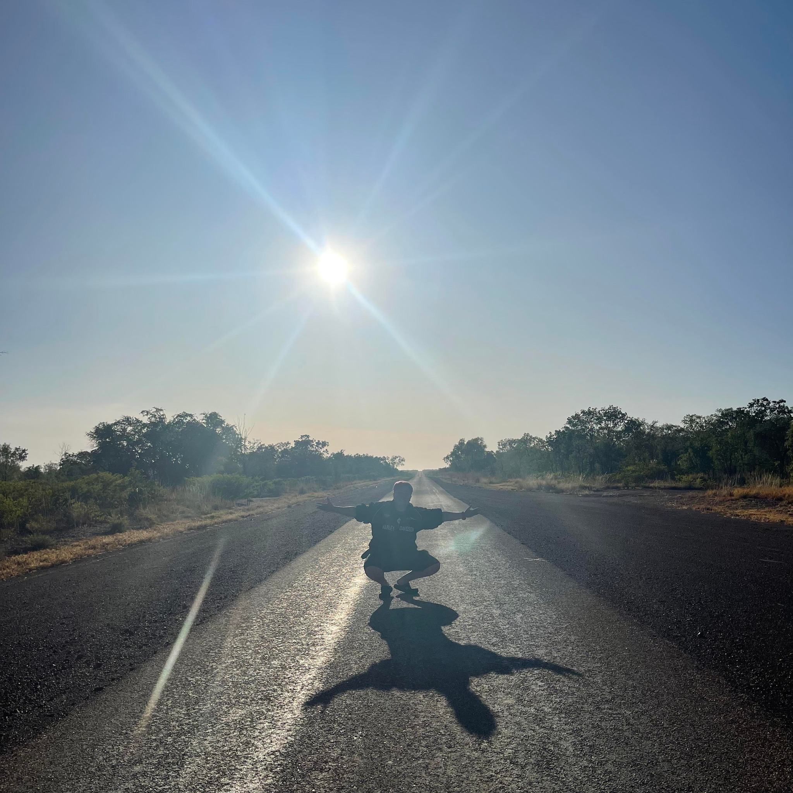
Darwin & Melbourne, Australia
After 4.5 years on the factory floor, I needed a reset. Managed facilities maintenance systems at Heartbreak Hotel McArthur, operated automatic M/C at Langdon Ingredients. Same production-line discipline, completely new industries. Came back with perspective, resilience, and a healthy tan.
Arçelik Hitachi, Prachinburi, Thailand
My domain: automatic inspection machines. Door colour detectors, door-gap alignment checkers, PLC-controlled quality gates. Ensured product quality through testing/inspection, investigated defects, implemented preventive actions, designed user-friendly interfaces for qualitative machines, and coordinated inspection processes across departments. Frequently travelled overseas for rework operations.
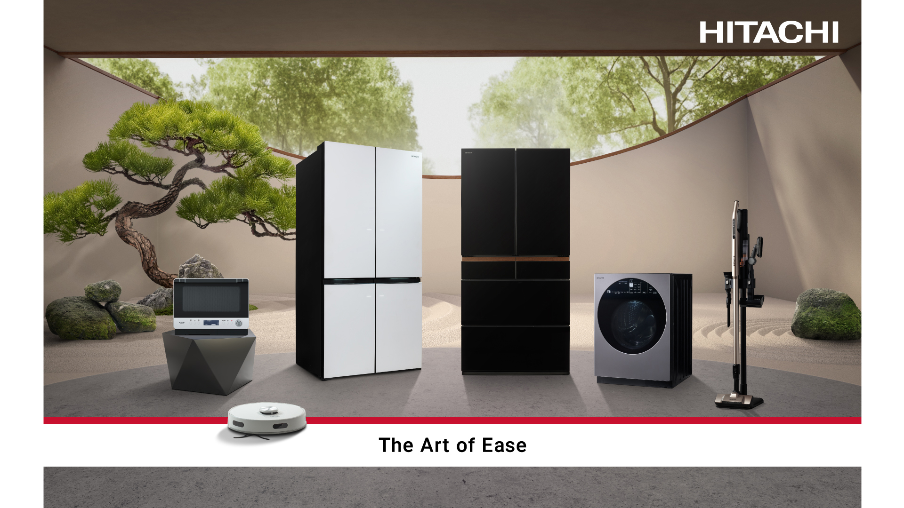
PTT Global Chemical (PTTGC), Rayong, Thailand
Control system maintenance at one of Thailand's biggest petrochemical companies. Prepared and maintained custody meters (radar meters, level transmitters) and assisted control system work planning. First taste of industrial-scale engineering.
King Mongkut's University of Technology Thonburi, Thailand
Mechanical engineering meets electronics meets software. Competed in ABU Robocon and Seacon War of Steel, built drones, and graduated ready to build anything.
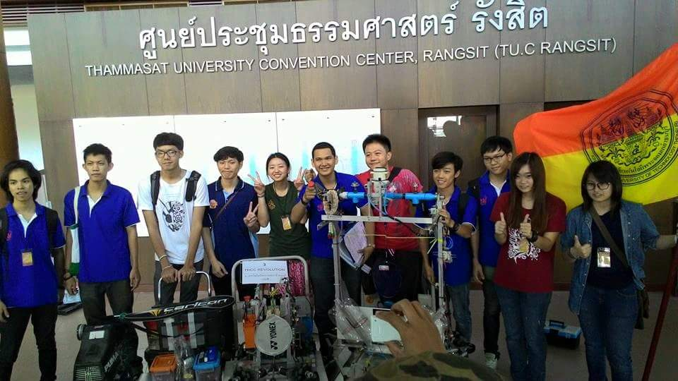
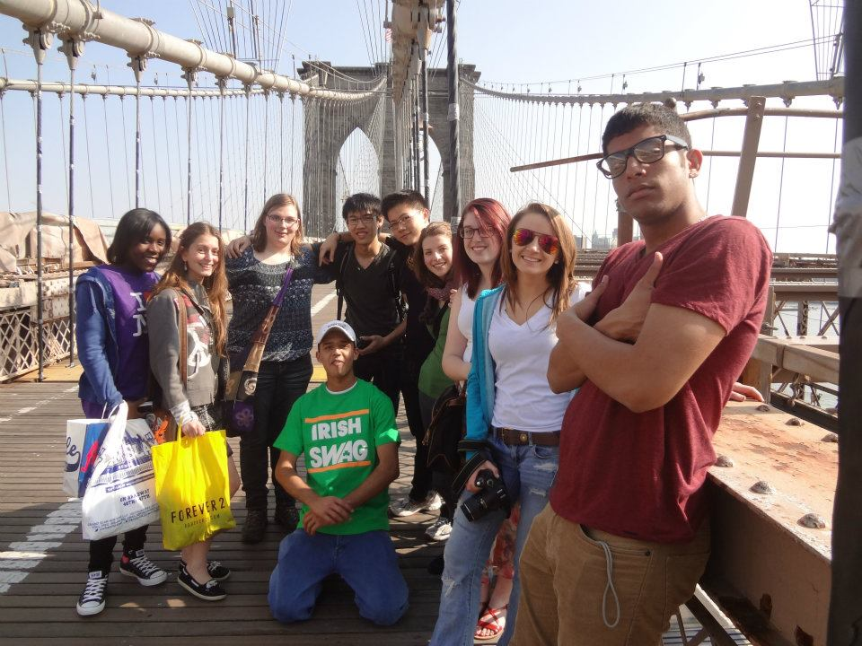
Hershey High School, Pennsylvania, USA
15-year-old me flew solo to America, lived with a host family, and survived a full year of American high school. Also discovered that Hershey really does smell like chocolate. This experience made me fearless about jumping into the unknown.
QA pipelines, healthcare apps, flying robots, and more.
My capstone project. SOLNZ's Jenkins pipeline deployed code straight to production with zero tests. I fixed that. Built test profile isolation with H2 + mock beans, a 6-test automated suite (integration + unit + context load), a GitHub Actions CI pipeline, and proposed Jenkinsfile.qa adding test/QA/smoke stages. Factory-floor QA thinking applied to the software world.
Coordination tool for small clinics: booking, amending, cancelling appointments, managing diagnosis records. I led the frontend, built the entire UI with JavaScript, HTML/CSS, Bootstrap, connected to a FastAPI backend. Focus: something clinic staff can use without a manual.
NZ-focused simulation for long-range car rentals. Pick locations, set dates, handle cancellations. Built entirely in Python with proper database design. My "prove I can architect a complete business system" project.
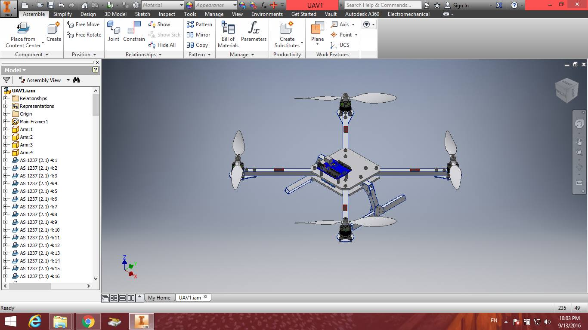
Graduate project. Full mechanical structure in Autodesk Inventor, 3D-axis motion with aerodynamics, coordinated PID control in C++ on Arduino. Mechanical design + electronics + embedded software in one flying machine.
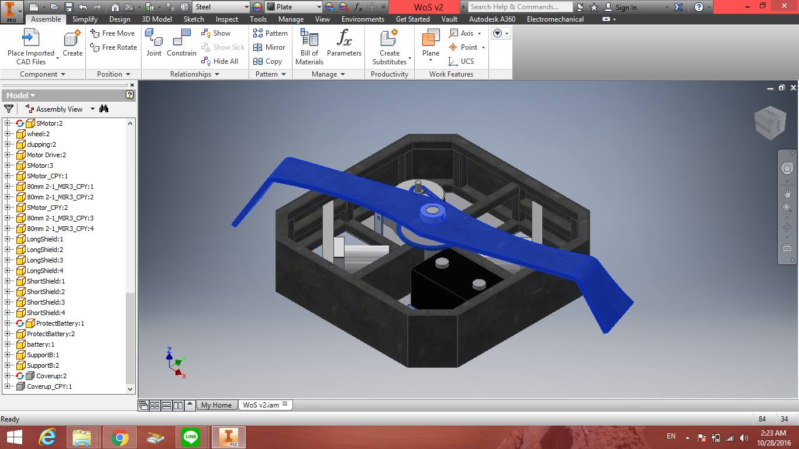
Full system design for combat robotics. Mechanical structure, electronics, programming, all in one machine built to survive. Chassis and weapon systems in Autodesk Inventor, physical build with chain-driven mechanisms. Two years competing at one of Thailand's top robotics events.
Research focused on building QA environments for small organisations that lack dedicated testing infrastructure. Investigated how startups and small teams can implement automated testing pipelines without enterprise-level budgets, using the SOLNZ CRM project as a real-world case study.
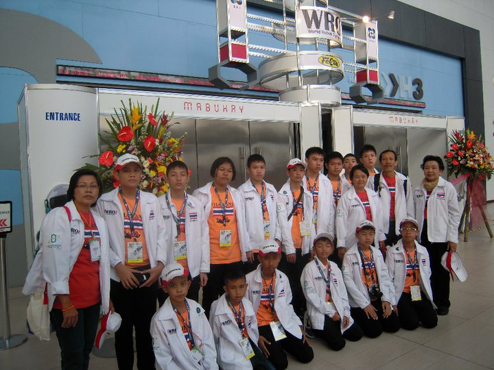
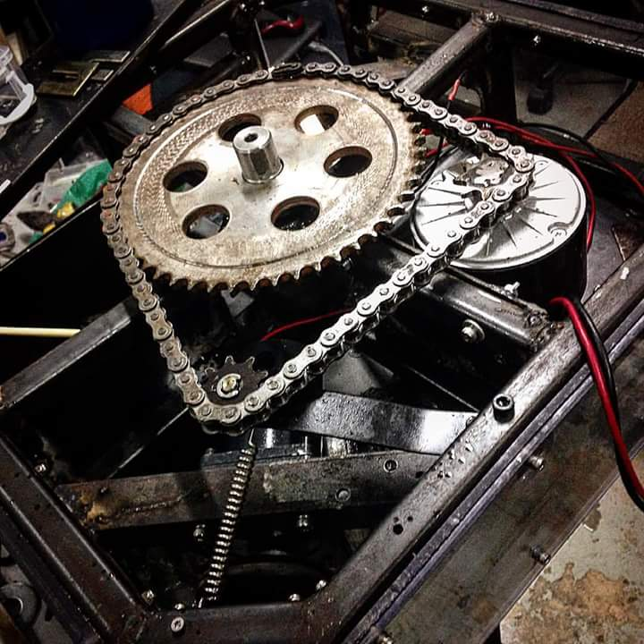
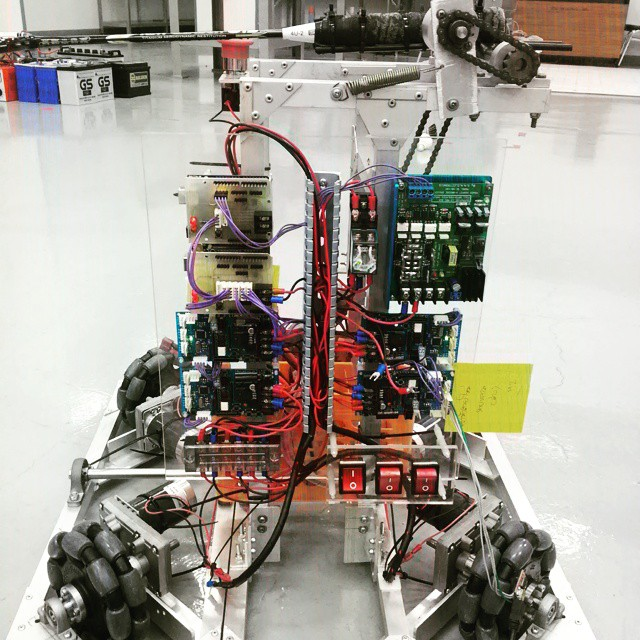
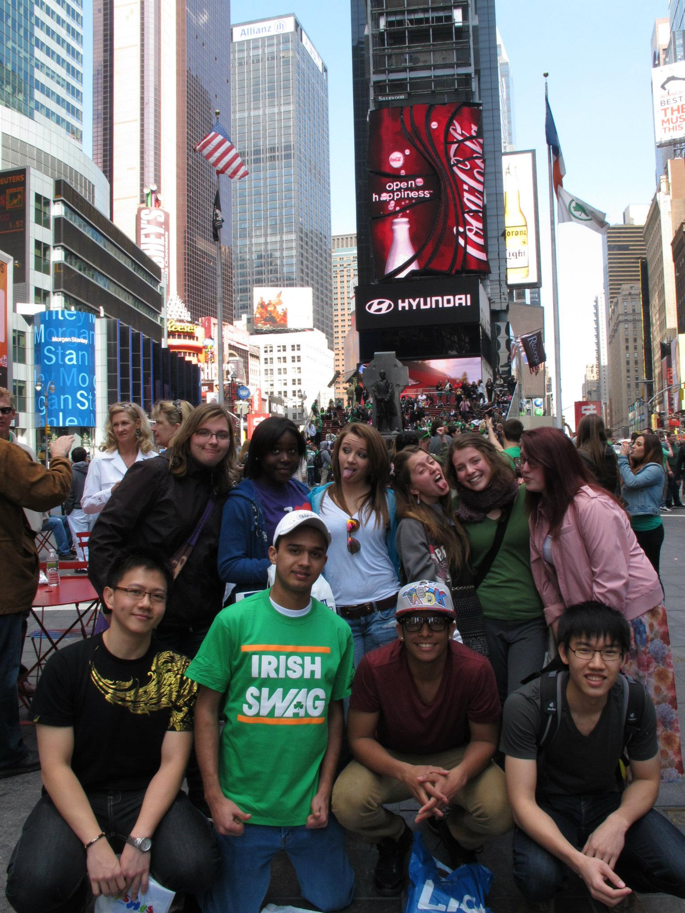
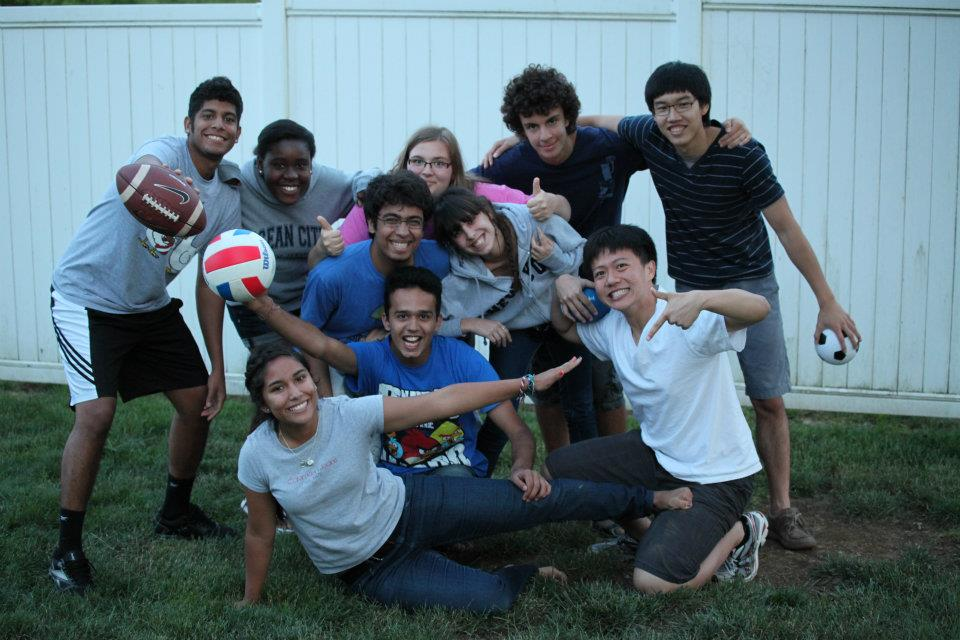
What makes me tick, beyond the terminal.
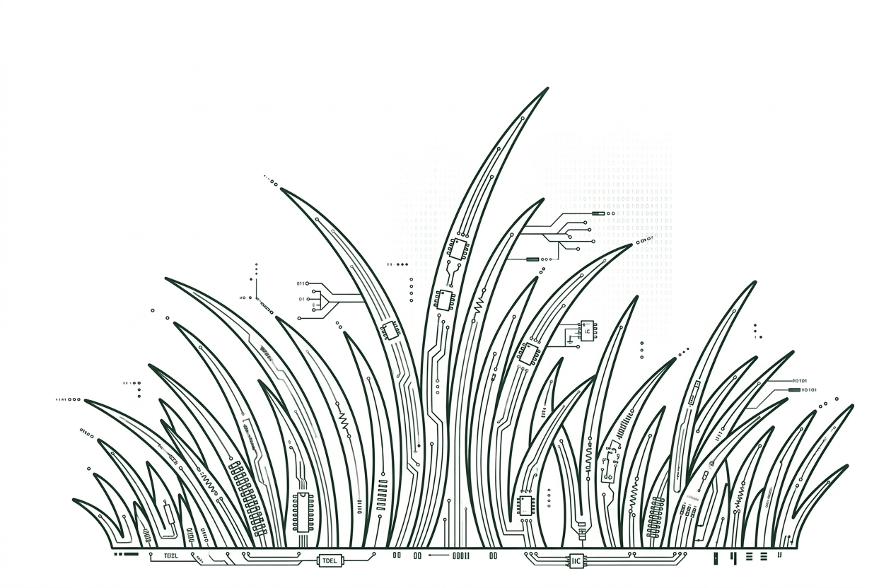
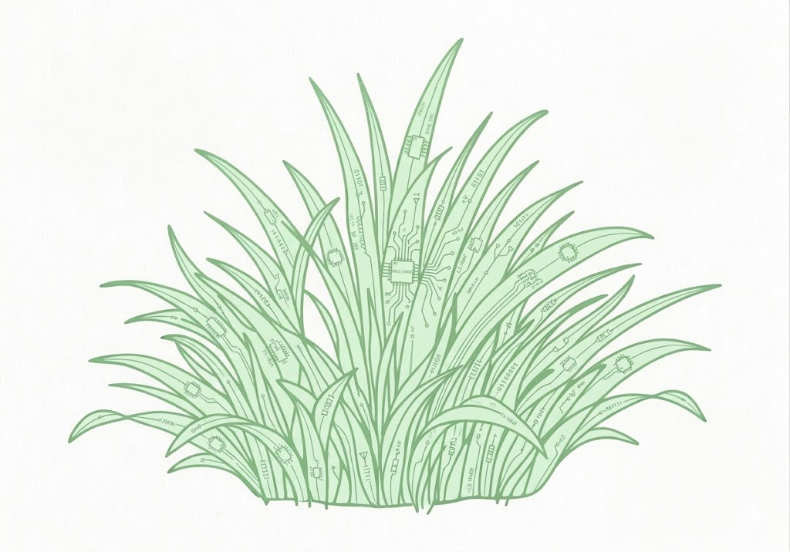
Drawn to the visual side. Pixel-perfect UIs, smooth animations, clean component architecture.
Career Focus: Frontend4.5 years finding what's wrong before anyone else. Quality is not a phase, it's a mindset.
Career Focus: QANo jargon. I explain so everyone gets it, from CEO to intern.
Software + hardware + electronics working together. Big-picture thinking from mechatronics into software.
Thai basil stir-fry specialist. Want to bribe me? Suggest a restaurant.
4 countries, too many flights. Done being a nomad. New Zealand is home.
New framework? New recipe? I'm the first to raise my hand. High passion, clear plans.
Craft beer, pool laps, competitive gaming. Balance is the whole point.
Job opening, project idea, or just want to debate the best pad Thai in Auckland? My inbox is always open.
Auckland CBD, New Zealand
Fun fact: I've never said no to a coffee chat. Worst case, we both get caffeinated. Best case, we build something amazing together.
Send Me an Email